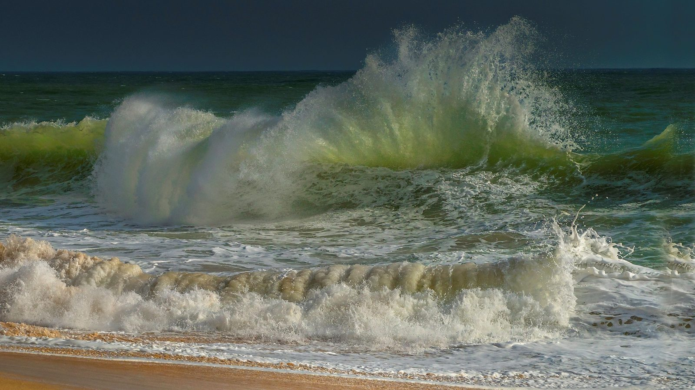

Santa Catarina · Clima
Santa Catarina · ClimaChuva com granizo atinge 23 cidades de Santa Catarina, e cinco decretam situação de emergência
O estrago que a mesma frente fria já deixou pelo estado.
A Defesa Civil de Santa Catarina espera onda de sul entre 2,5 e 3 metros junto à costa, vento médio de 30 a 40 km/h na faixa da praia e rajada que pode passar de 80 km/h. A orientação é ficar fora da água nesses dois dias.
Em 30 segundos · Modo de Leitura, formato original Santa Informa
Um ciclone extratropical está no oceano entre Santa Catarina e o Rio Grande do Sul.
O aviso é a Observação Marítima 154/2026, da Defesa Civil do estado.
Ela saiu no domingo, 30 de agosto, às 18h15.
A previsão é de onda de direção sul entre 2,5 e 3 metros junto à costa.
Em alto mar, os picos podem ser maiores.
O vento médio na faixa costeira fica entre 30 e 40 km/h.
As rajadas podem passar de 80 km/h.
O risco é de moderado a alto na terça, 1º, e na quarta, 2 de setembro.
A Defesa Civil pede para evitar navegação, pesca, esporte no mar e banho.
E para não caminhar nem pedalar na orla se a onda estiver chegando à ciclovia.
Santa CatarinaPublicada em Redação Santa Informa

A semana começa com chuva forte, termina com frio e, no meio dela, o mar fica bravo. A Defesa Civil de Santa Catarina emitiu no domingo, 30 de agosto, às 18h15, a Observação Marítima 154/2026, com aviso de mar agitado e risco de ressaca entre a terça-feira, 1º, e a quarta-feira, 2 de setembro.
Um ciclone extratropical posicionado no oceano, entre o litoral catarinense e o gaúcho, favorece vento forte na costa. O vento médio na faixa da praia fica entre 30 e 40 km/h, com rajada que pode passar de 80 km/h. Esse vento levanta onda de direção sul, com altura entre 2,5 e 3 metros perto da costa e picos ainda maiores em alto mar. O risco de ocorrência ligada à agitação marítima e à ressaca é classificado de moderado a alto nesses dois dias.
A recomendação é curta e serve para todo mundo. Evitar navegação, pesca, esporte no mar e banho de mar. Não caminhar nem pedalar na orla se a onda estiver alcançando a ciclovia. E ficar de olho nos avisos e alertas do órgão, que costumam ser atualizados quando a condição muda. Em emergência, o telefone da Defesa Civil é o 199 e o do Corpo de Bombeiros é o 193.
O boletim de previsão 243/2026, das 5h desta segunda-feira, ajuda a montar o quadro. Nesta segunda, 31, a instabilidade é generalizada, com chuva intensa e volumosa em todas as regiões e risco alto a muito alto de alagamento e deslizamento. Na terça, a frente fria vai se afastando, com temporal isolado no Meio-Oeste, na Grande Florianópolis, no Vale do Itajaí e no Litoral Norte, onde ficam Itapema e a Costa Esmeralda. Na quarta o tempo firme volta em todas as regiões, com massa de ar frio e seco, mínima perto de 0 °C na Serra e máxima entre 12 °C e 23 °C. A quinta segue seca e fria, e na sexta a instabilidade volta na divisa com o Paraná.
Itapema, Porto Belo e Bombinhas vivem de praia, e a agenda do mar não para porque é começo de setembro. Tem barco de passeio, tem pescador que sai cedo, tem gente que corre e pedala na orla no fim da tarde. Ressaca também come faixa de areia e joga água por cima do calçadão, e isso costuma aparecer primeiro nos trechos mais baixos. São dois dias de atenção, e depois deles a previsão é de tempo firme.
O resumo de 30 segundos está no topo e a versão completa é o texto acima. Aqui ficam as três leituras da casa sobre o mesmo assunto.
Clara, a otimista
Aviso de mar bravo com dois dias de antecedência é uma coisa boa, e a gente esquece disso. Quem tem barco tem tempo de recolher, quem sai para pescar tem tempo de remarcar, quem corre na orla escolhe outro horário. Nada disso existia com essa clareza há vinte anos.
E tem o outro lado da previsão. Passada a quarta-feira, o quadro é de céu limpo e ar seco. Depois de um fim de semana inteiro de chuva, a semana ainda promete devolver dia bonito para a região.
Seu Prudêncio, o criterioso
Merece atenção a combinação que o boletim descreve. Vento de 30 a 40 km/h na faixa da praia já é desconfortável. Rajada acima de 80 km/h derruba galho, vira guarda-sol e arrasta lona de quiosque. Junte a isso onda de sul de até 3 metros e você tem dois dias em que a beira não é lugar de curiosidade.
Vale acompanhar um detalhe que o texto não traz: a altura da maré. Ressaca no meio da maré alta bate bem mais longe na areia do que ressaca na maré baixa, e essa informação faz diferença para quem tem estrutura montada na praia. Uma sugestão útil para o dono de quiosque e para o clube náutico: recolher o que é leve ainda hoje, enquanto o vento não virou.
E é justo reconhecer o que o aviso faz bem. Ele traz hora de emissão, número de boletim, faixa de altura da onda, faixa de vento e os dias exatos de risco. Isso é informação que dá para planejar em cima, e não um alerta genérico de que o tempo vai piorar.
Caco, o sarcástico
Mar agitado. Que jeito educado de dizer que o oceano acordou de mau humor e resolveu subir na calçada.
A recomendação diz para evitar banho de mar entre terça e quarta. Confesso que, com 15 graus e vento de 80 por hora, eu já vinha evitando por conta própria.
Tem também o aviso para não pedalar na orla se a onda estiver chegando na ciclovia. Ou seja, se o mar estiver na ciclovia, é melhor não pedalar. Ainda bem que avisaram, porque tem gente que ia tentar.
Fontes: Defesa Civil de Santa Catarina, Observação Marítima 154/2026, emitida em 30 de agosto de 2026, às 18h15, de onde saem o ciclone extratropical entre o litoral de Santa Catarina e o do Rio Grande do Sul, o vento médio de 30 a 40 km/h na faixa costeira, a rajada que pode passar de 80 km/h, a onda de direção sul entre 2,5 e 3 metros com picos maiores em alto mar, o risco de moderado a alto entre 1º e 2 de setembro e as recomendações de evitar navegação, pesca, esporte no mar, banho e a orla quando a onda alcança a ciclovia. A previsão para os próximos cinco dias, boletim 243/2026, das 5h de 31 de agosto de 2026, traz o quadro de segunda a sexta, o temporal isolado no Litoral Norte na terça, a volta do tempo firme na quarta e as temperaturas da semana. A foto do topo é imagem ilustrativa de banco gratuito e não registra o fato noticiado.
Santa Catarina · ClimaO estrago que a mesma frente fria já deixou pelo estado.
 Itapema · Clima
Itapema · ClimaO aviso que abriu esse fim de semana de chuva em Itapema.
A rede de medição que a região está montando para o que vem por aí.